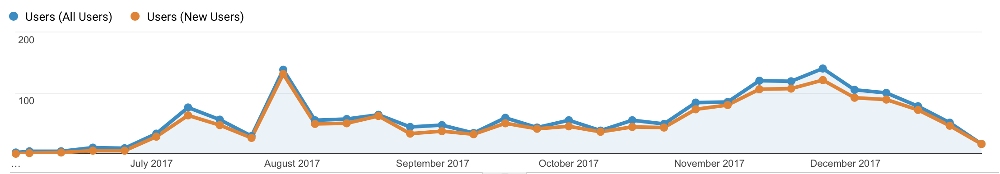

Idea
Let's face it, research and analytical outputs are generally not interesting - at least not so in their original form. The scientifically accurate language appeals only to very few people. To most of us, reading a thick reasoning paper with lots of numbers poses an intellectual overhead that is not always pleasant and welcome, especially when you are busy. This is true in my own experience - I often argue that if I as an author cannot be 'bothered' to read my own works of 70 pages (I won't), how can I convince those who do not have a vested interest to read?
This needs to change, if our work is to reach more people, make it easy, and reap more impact.
Fortunately the problem is not uniquely ours - in fact it is a well trodden issue and there are good solutions. I would argue that in order to capture those with very limited attention span we need a new media, and going digital by default is one way to make the information more accessible and perhaps, by doing so, more interesting. For example, the UK government digital service offers some practical suggestions.
The knowledge lab, or the World Heritage Analysis which came to be known afterwards, represents my effort to put this thinking into action, to deliver the tasks I was leading under the Brighter Outlook project.
Here are a few links on the thinking:
Platform
While far from being complete, the World Heritage Analyses (hereafter refer to as the Lab) is not just a portal with links directing to each product or prototype - it is designed to be the central place to foster a mechanism that allows ideas to be prototyped, tested, scrutinised and, as eventually a platform to raise funds for their eventual departure to become fully fledged product or services.
As it stands, it lacks the central pull factor to bring in more traffic and potential interest. This may be due to the lack of a usable feedback system, a limited scope that appeals to only a small audience, and possibly also lacking effective promotion.
Most of the traffic come from new users, and a large majority visit the datasheets, a well established product before its rebirth as an online service

Current implementation
It is written in pure HTML and CSS, and currently hosted by GitHub pages.
Full documentation of the World Heritage Analysis can be found on the GitHub below.